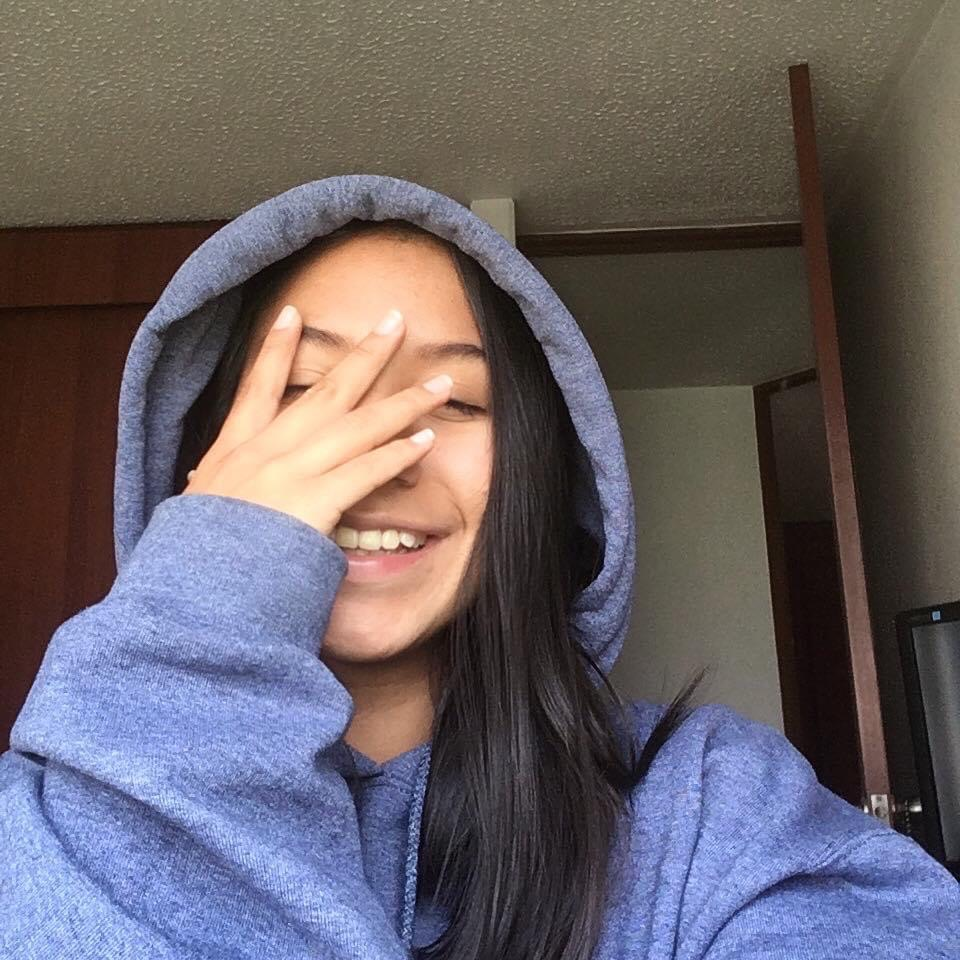
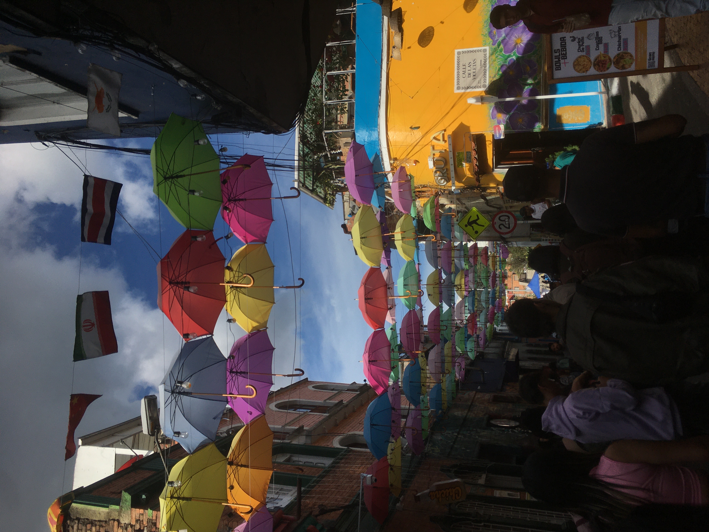
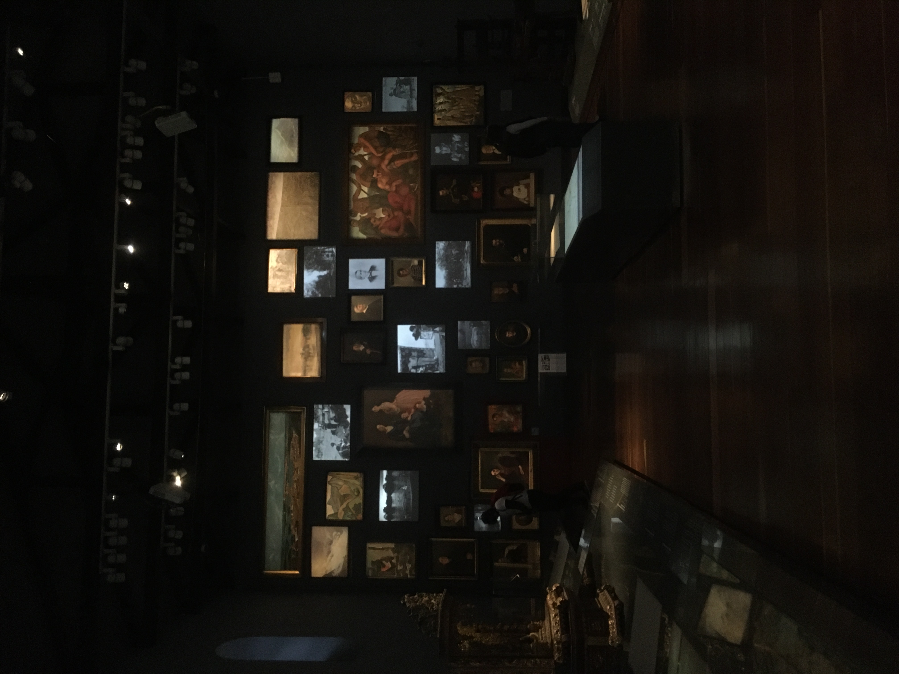

Soy una persona apasionada, creativa y enérgica que encuentra alegría y propósito en cada aspecto de la vida. Con una mente abierta y un corazón generoso, me esfuerzo por ser una fuerza positiva en el mundo y aprovechar al maxímo cada experiencia que se cruza en mi camino.
Desde una edad temprana, he sido reconocida por  por mi curiosidad insaciable y mi capacidad para inspirar a otros a través de mi entusiasmo contagioso. Creo firmemente en la importancia de crear relaciones significativas y enriquecedoras. Una de mis cualidades más destacables es mi creatividad sin límites. Disfruto explorando diferentes formas de expresión artistíca, ya se a traés de la música, la escritura, la pintura o la fotografía. Encuentro inspiración en las experencias cotidianas y me encanta descubrir la belleza en los lugares más inesperados.
 Como individuo orientado a la acción, siempre estoy buscando formas de crecer y superar mis límites. Me desafío a mí mismo constantemente, ya sea aprendiendo nuevas habilidades, asumiendo proyectos desafiantes o enfrentando mis miedos con valentía y determinación. Además, me considero una persona compasiva y empática, comprometida a hacer del mundo un lugar mejor para todos. Me apasiona contribuir al bienestar de los demás y estoy involucrado activamente en iniciativas sociales y comunitarias que promueven la igualdad, la justicia y la inclusión.
Soy una persona multifacética con una amplia gama de intereses, cualidades y pasiones. Estoy comprometido a vivir una vida significativa y auténtica, y estoy emocionado por las oportunidades futuras que me esperan.